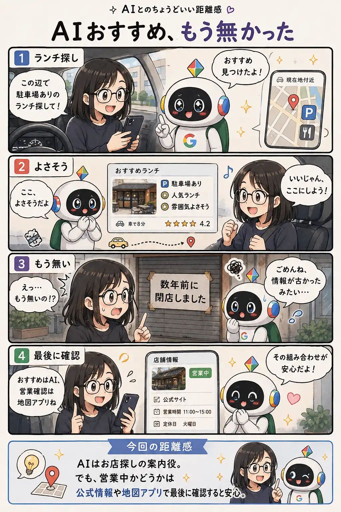

#032
AIおすすめ、もう無かった
便利な案内と、最新情報の確認は別のお話でした。

メモ
AIに「近くのおすすめランチを探して」と頼むと、 条件に合いそうなお店を素早くまとめてくれます。
駐車場の有無や雰囲気、 人気度まで整理してくれるので、 初めての土地では特に便利です。
ただ、 AI自身がお店の営業状況を保証しているわけではありません。
参照した情報が少し古かったり、 閉店や移転が反映されていなかったりすることがあります。
今回のように、 現地へ着いてから「もう無い」と気付くこともあります。
これはAIが嘘をついたというより、 情報の鮮度の問題です。
AIは候補探しや比較が得意です。
一方で、 営業中かどうか、 臨時休業していないか、 最新の営業時間はどうか、 といった最終確認は地図アプリや公式情報の方が確実です。
AIに探してもらい、 最後だけ人が確認する。
そのくらいの役割分担が、 外出先ではちょうどいいのかもしれません。
今回の距離感
AIはお店探しの案内役。営業状況は公式情報や地図アプリで最後に確認すると安心です。